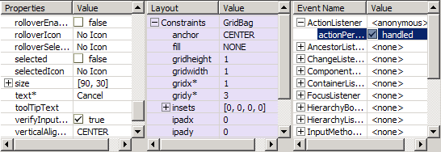
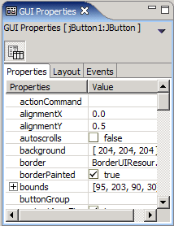

The GUI Properties Editor
The GUI Properties
editor enables you to change the properties of single or
multiply-selected form components. It comprises three separate editors:
- One for editing the properties of the selected GUI component(s)
- One for changing the layout and layout constraints for the selected component(s)
- One for setting event listeners for the selected component(s)
If multiple components
are selected then only those properties which the components have in
common will be shown, and setting a property/event/layout will set it
for all selected components.
When the main editor is maximized by clicking on the editor's name tab in Eclipse, and the horizontal split of the form/source editors is selected the properties editor takes on the form below.

Names
of any properties which have been
set to non-default values are followed by an asterisk (in the above
screenshot,
the "text" property of the selected button has been set to
"Cancel". For boolean properties, the default behaviour is to toggle
between true and false if the checkbox is clicked. This single-click
behaviour can be changed to a double-click by a setting in the Preferences Page.
If the vertical split is selected for the form/source editors then the three property editors are arranged in a tabbed panel, as shown below. If the main editor is not maximized,
then the GUI Properties editor can be switched between tabbed layout
and side-by-side layouts by using the toggle-button at the top of the
properties editor.
